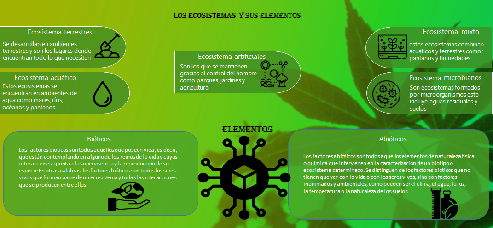

La gestión ambiental y ecológica se refiere a un conjunto de prácticas, políticas y regulaciones destinadas a proteger y conservar el medio ambiente, así como a promover un desarrollo sostenible El desarrollo sostenible busca satisfacer las necesidades del presente sin comprometer la capacidad de las futuras generaciones para satisfacer sus propias necesidades. Esto implica un equilibrio entre el crecimiento económico, la inclusión social y la protección del medio ambiente. la gestión ecológica se centra en la conservación de los ecosistemas y la biodiversidad, que son cruciales para el mantenimiento de los servicios ambientales (como la polinización, la purificación del agua y el control de la erosión). La gestión ambiental y ecológica es fundamental para asegurar un futuro sostenible y saludable para las generaciones venideras. Involucra la colaboración entre gobiernos, empresas, comunidades y ciudadanos
Los ecosistemas son importantes en el mundo son seres vivos se relacionan entre sí y la alteración de las condiciones del medio puede afectar negativamente a los organismos, produciendo un efecto dominó de terribles consecuencias ambientales. La desaparición de un ecosistema puede alterar la salud ambiental del resto, se desarrollan y se relacionan. Entre los distintos elementos de este sistema hay una relación de equilibrio que el ser humano debe respetar. Si no lo hace, pone en peligro el futuro del ecosistema Los seres vivos se adaptan al medio en el que viven, es decir, al ecosistema del que son parte, y no podrían sobrevivir en otras condiciones. El tipo de suelo o de agua y sus características y componentes, la temperatura, la humedad son algunos factores que determinan qué tipo de ecosistema es. Por tanto, no solo es esencial respetar a los seres vivos, sino también el suelo, el agua y los minerales, Existen ecosistemas acuáticos, terrestres, mixtos y artificiales Los terrestres: Los ecosistemas terrestres son aquellos ecosistemas que tienen lugar en el suelo firme y en el aire, o en los accidentes geográficos (montañas, etc.) Acuáticos: son los espacios de vida que se desarrollan en un cuerpo de agua. Estos cuerpos de agua, pueden ser de diferente tamaño y naturaleza, pueden ser mares, ríos, lagos o pantanos, entre otros. Mixtos: os son aquellos que se desarrollan en zonas intermedias. En las zonas del planeta donde interactúan el medio terrestre y el medio acuático se desarrollan los ecosistemas mixtos Artificiales: artificial es creado o modificado por la acción humana. Dependen prácticamente de la intervención de los humanos, pudiendo controlar las condiciones del suelo, el clima, la disposición de algunos recursos Microbianos: son ecosistemas formados por organismos microscópicos que habitan en prácticamente todos los ambientes, tanto acuáticos como terrestres Lo que al final se concluye que los ecosistemas son importante son tan solo para los humanos, sino también para la misma vida por como se demuestra todo los días, que gracias a ellos se mantiene un orden natural en la vida ya que nos ayudan a conservar en planeta pero claro tampoco podemos dejarlo todo a la naturaleza los humanos también podemos cuidar, mantener y vigilar los mismos cambios de los ecosistemas, conservar los ecosistemas en buen estado es indispensable más allá, los ecosistemas proveen al ser humano de los recursos necesarios para vivir Por tanto, ya sea por conciencia ecológica o por egoísmo bien entendido, gobiernos y ciudadanos deben colaborar para lograr que ningún ecosistema desaparezca.
La conservación del medio ambiente resulta fundamental para asegurar un adecuado equilibrio de los procesos e interacciones que se producen en el mismo, incluyendo el desarrollo de las distintas formas de vida vegetal y animal. En concreto, la presencia de sustancias, ya sean de origen natural o no, por encima de ciertos niveles de concentración, o bien su combinación en determinadas condiciones pueden alterar las condiciones del medio hasta el punto de resultar perjudiciales para el desarrollo de los diferentes procesos vitales. La presencia de sustancias contaminantes puede ser debida a causas naturales, por ejemplo la actividad volcánica o los incendios forestales no inducidos por la acción humana, y por tanto la contaminación asociada a estos fenómenos siempre ha estado presente. Sin embargo, junto a la contaminación natural, durante los últimos siglos han ido apareciendo infinidad de sustancias derivadas de las diferentes actividades humanas. Esta contaminación humana o antropogénica está fundamentalmente asociada a la actividad industrial y al uso de combustibles fósiles, pero también nuestras actividades más cotidianas pueden suponer una amenaza, tanto por su peligrosidad como por el volumen de sustancias potencialmente peligrosas generado que constantemente es vertido a los diferentes ecosistemas (atmósfera, suelos, ríos…).
La contaminación en una comunidad puede manifestarse de diversas formas, afectando la salud, el medio ambiente y la calidad de vida de sus habitantes. La contaminación del aire, provocada por emisiones de vehículos, industrias y quema de residuos, puede causar problemas respiratorios y cardiovasculares en la población. Por otro lado, la contaminación del agua, a menudo resultante de desechos industriales y agrícolas, puede comprometer el acceso a agua potable y afectar la biodiversidad de ecosistemas acuáticos. La contaminación del suelo, ya sea por pesticidas, metales pesados o desechos sólidos, no solo deteriora la calidad de los cultivos, sino que también representa un riesgo para la salud humana. Asimismo, la contaminación acústica, derivada del tráfico y la actividad industrial, puede generar estrés y problemas de audición. En conjunto, estos tipos de contaminación crean un entorno adverso que requiere atención urgente y acciones efectivas para mitigar su impacto en la comunidad y fomentar un desarrollo sostenible. La contaminación es un problema global que afecta a comunidades de diversas maneras. Existen varios tipos de contaminación que pueden impactar negativamente la salud humana, el medio ambiente y la calidad de vida en general. A continuación, presento un análisis de los principales tipos de contaminación que pueden afectar a una comunidad.